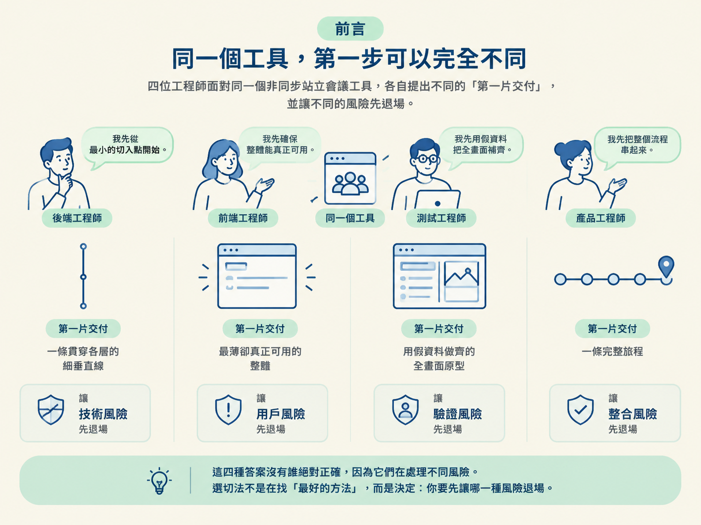
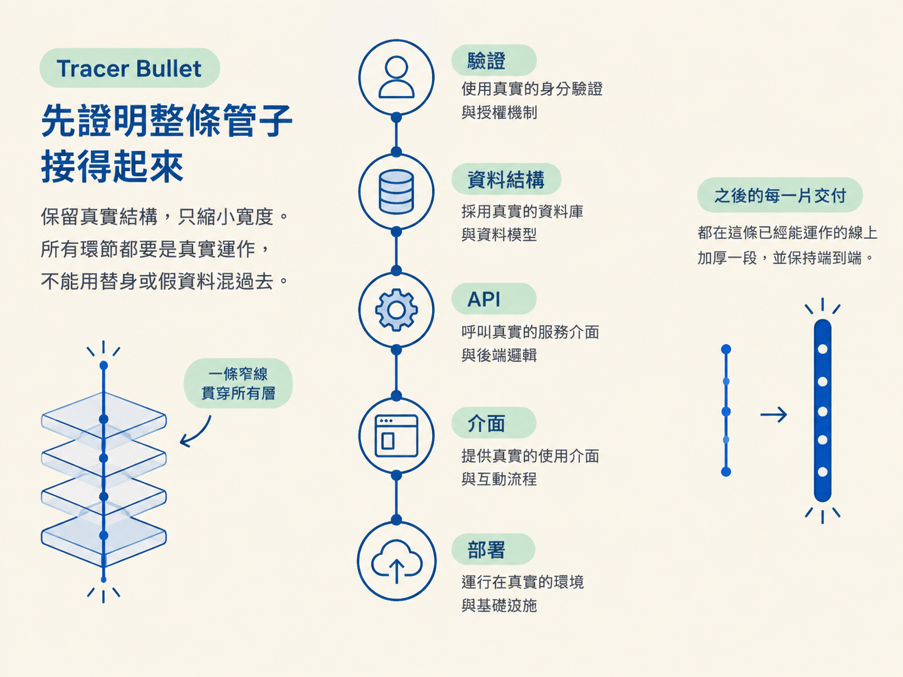
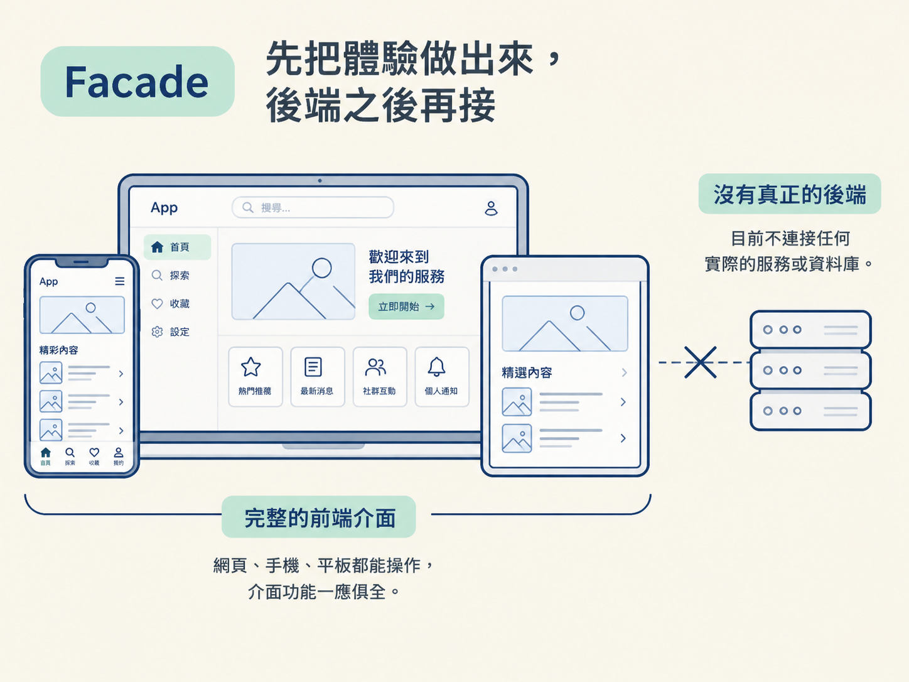
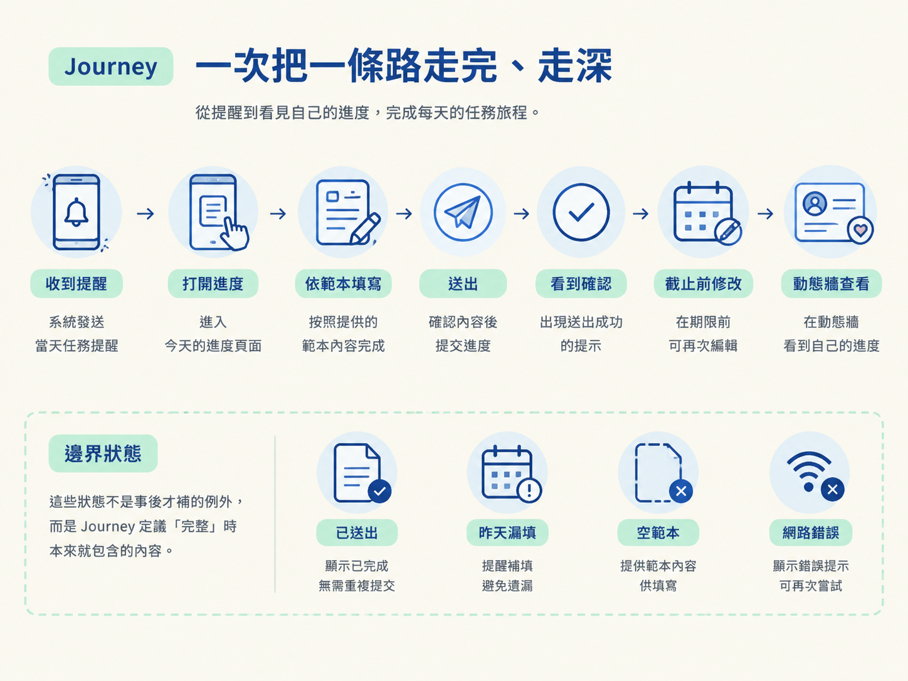

你將能用自己的話分辨四種 build approach：它們各自先切什麼、把什麼留到後面，以及該如何依照產品目標選擇合適的切法。
想像你正在規劃一個非同步站立會議工具。它要讓成員登入、建立團隊、填寫每天的進度，並在動態牆上查看彼此的更新。
四位有經驗的工程師坐下來，可能會提出四種完全不同的第一片交付：
第一位說：「先做一條最細、但從頭到尾都是真的線。使用者能登入、建立團隊、送出今天的進度，也能在動態牆看到它。驗證、資料庫、介面都要是真的，只是範圍很窄。」
第二位說：「先做一個明天就能交給真實小組使用的最小版本。使用者能登入、把今天的進度貼到共用看板，也能看到大家的貼文。團隊、角色和範本編輯先不要。」
第三位說：「先把所有畫面用假資料做齊，整個流程都能點，先確認體驗對不對；後端之後再接。」
第四位說：「先把『每天送出進度』這條完整旅程做好。已送出、昨天漏填、空範本、網路錯誤等狀態都要處理，這條路拋光到滿意後，再做下一條。」
這四種答案沒有誰絕對正確，因為它們在處理不同風險。選切法不是在找「最好的方法」，而是在決定：你要先讓哪一種風險退場。

分辨這四種切法，最直接的方法是觀察第一片交付。每種方法對「完成」的定義都不一樣。
| 切法 | 它最怕的風險 | 第一片交付 | 真實程度 |
|---|---|---|---|
| Tracer Bullet | 各層彼此接不起來 | 一條穿過每一層、真的會動的最薄垂直線 | 全部真實，只是範圍窄 |
| Skateboard | 做出沒人想用的產品 | 最薄但真正可用的整體 | 全部真實，也願意砍掉結構 |
| Facade | 做出錯誤的使用體驗 | 所有關鍵畫面都能用假資料操作 | 介面真實，後端暫時是假的 |
| Journey | 每條路都做得很淺、只完成一半 | 一條完整的使用者旅程 | 選定的那條路全部真實且完整 |
Tracer Bullet 的核心判斷是：最危險的事情，不是少做一個功能，而是驗證、資料庫、API、介面和部署這些層根本接不起來。
因此，它先用一條真的、很窄的線穿過整個系統，把「全流程無法串接」這個風險先消掉。這條線就是會動的骨架；既然它本身已經是真的，就不需要另外做一個之後會丟掉的假骨架。
它遵守的原則是：保留真實結構，只縮小寬度。驗證、資料結構、API、介面和部署都要是真的，不能用替身或假資料混過去。之後每一片交付，都是在這條已經能運作的線上加厚一段，而且仍然保持端到端。

所以，一片 Tracer Bullet 不一定代表「一個完整能力已經做完」。它代表的是「在已經會動的路徑上，又接上了一段」。
以非同步站立會議工具為例，第一片可以包含登入、建立團隊、送出一次進度，以及在動態牆看到這筆進度。邀請成員、可編輯範本、提醒、歷史紀錄和洞察，則是後續接上的新線段。
Skateboard 防的是另一種風險：產品做了很多，卻沒有人想用。它的做法是盡快把一個真正可用的產品交到真人手上，讓市場或使用者回饋早點出現。
第一片交付是最薄但真正可用的整體。它必須能被做出來、能被交付，也要足以讓一個真人選擇使用。
Skateboard 的關鍵不只是砍功能寬度，而是願意砍掉結構。如果團隊、角色或多租戶不是第一天就必要，就先不要做。它的比喻是滑板、腳踏車和汽車：每次交付的都是同一個可用產品變得更好，而不是先做一個汽車底盤，等很久之後才知道沒人想開。
在這個工具上，第一版可能只有一個人登入、把進度貼到共用看板，並查看大家今天的貼文。它可以暫時沒有獨立團隊、角色和範本編輯器。
和 Tracer Bullet 相比，Skateboard 更願意犧牲完整的內部結構，換取「現在就能用」。
Facade 處理的是體驗風險：如果最怕做出錯的流程或介面，就先讓使用者看見並操作整個產品的外觀，再用回饋確認方向。
第一階段會把所有關鍵畫面用替代資料做出來，讓畫面能點、流程能走、頁面能互相導向。驗證和資料庫先擱著，後端暫時不存在。
這種做法用後端的假，換取速度和回饋。但代價也要說清楚：它還不是可以上線的產品，而是原型等級的成果。
等介面經過檢視後，才逐一把假資料換成真的後端。替換時，是在既有且已經被審過的畫面背後接上真實能力，而不是一開始就同時承擔整個後端系統的風險。
Facade 和其他三種切法最大的差異是：第一片交付很寬，但還不是真的。介面可以到處都在，後端則暫時一處都沒有。

Journey 防的是「每個地方都做一點，卻沒有任何地方真的完成」。它會先選定一條使用者旅程，從頭到尾做成真實、完整而且經過拋光的體驗，完成後才開下一條路。
一次只做一條路，其他路暫時不存在，是刻意的取捨。Journey 把體驗和漏斗本身視為產品，因此選擇深度優先：先讓某一條關鍵旅程真的順暢，而不是讓所有功能都停留在半成品狀態。
對這個非同步站立會議工具來說，第一階段可以完整處理「每天送出進度」：
同時，這條旅程的邊界狀態也要處理好，包括已送出、昨天漏填、空範本和網路錯誤。這些不是事後才補的例外，而是 Journey 定義「完整」時本來就包含的內容。

選擇前，先釐清產品目標與限制，再說明理由，不能只因為某個方法聽起來熟悉就套用。
正式的生產專案預設使用 Tracer Bullet，只有在目標明確要求時才切換：
選定之後，/scope 會讀取該角色對應的檔案，並在接下來的切片與排序中採用那位工程師的角色。這不是換一個標籤而已，而是改變「一片交付到底算什麼」。
如果只是把每個能力各自做成一大塊，再貼上 Slice 1、Slice 2，那並沒有真正遵守任何一種切法。切法必須反映在每一片實際交付的內容裡。
這個選擇會寫在 scope 檔案開頭：
Build approach: <名稱> (<一句話原則>)它是專案層級的慣例。之後 /architect、/develop、/check verify 都會讀取並遵守它；由這個 approach 決定的切片單位，也會成為每個功能顯示的 phase。
如果某個功能確實更適合另一種切法，可以單獨覆寫。做法是在該功能標題旁掛上標籤，且只影響那個功能；沒有標籤的功能，就繼承專案預設。
四種 build approach，看第一片交付就能分辨。Tracer Bullet 先打通一條最薄、但每一層都真實的垂直線，證明系統接得起來；它保留真實結構，只縮小範圍。Skateboard 先交付最薄但真正可用的整體，願意砍掉結構，換取現在就能使用。Facade 先用假資料把所有關鍵畫面做齊、做成可操作的流程，再逐一接上後端。Journey 一次把一條使用者旅程做完整，包含邊界、空狀態、錯誤和拋光。正式的生產專案預設採用 Tracer Bullet，再依產品目標轉向；選定後讀取對應的 persona 檔，並在後續切片中持續遵守。最後，把選擇寫在 scope 檔案開頭，讓後續工具都能依同一套規則工作。
到這裡，你已經看過規劃中的三個關鍵選擇：專案落在哪種 repo、採用哪種切法，以及功能要拆成什麼形狀。接下來還有一個現實問題：專案開始出貨後，計畫一定會和現況產生落差。下一節會處理 replan 與 add，讓這份活的計畫跟得上實際變化。